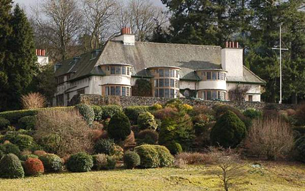
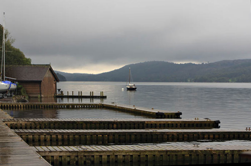
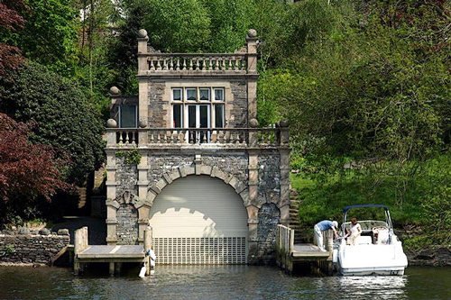
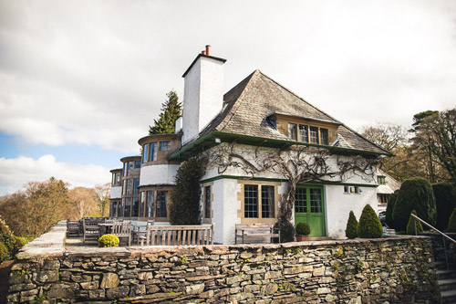
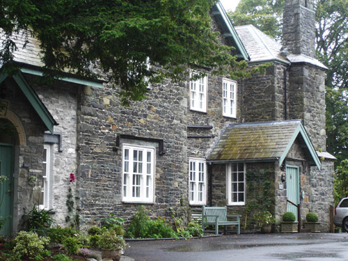
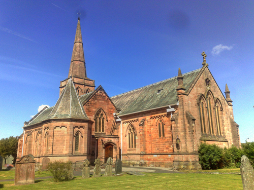
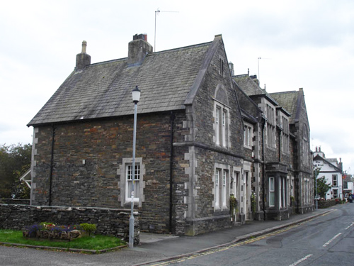
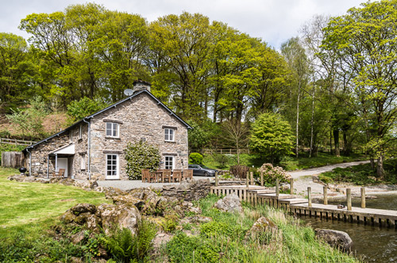

Broad Leys, used as the hotel where Poirot and Hastings stay at Windermere. Built in 1898 by Charles Voysey for the owners of Kendal Milne, a department store in Manchester.

The pontoons on the side of the lake where Charles Arundell's speedboat is moored.

Langdale Chase boathouse used as the 'Boathouse'.

The terrace at Broad Leys. In 1951, the building was acquired by the Windermere Motor Boat Racing Club and became the home of powerboat racing on the Lake until the introduction of a 10 mph speed limit in 2005.

Bishop's House used as 'Dr Tanios' house'.

St. John's Church, Keswick - where the funeral of Emily Arundell took place.

The Old Police Station, Hawkshead where the police investigation takes place.

"Hammerhole". Used as the 'House of the Tripp Sisters'.